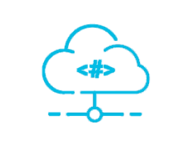
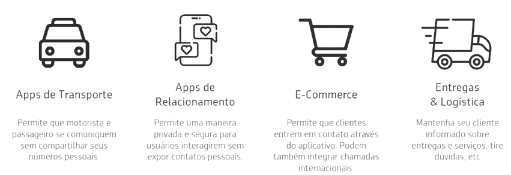

• Proteja identidades profissionais garanta aos seus clientes a
Como funciona ?
Usuário faz uma chamada atravésde um
aplicativo. Ex.: usuário liga para o
entregador ou motorista de taxi ou
entra em contato com a central de
atendimento.

Plataforma mascara o número original.
A plataforma recebe a chamada e mas-
cara o número antes de conectar
com o destinatário.
Ambas as partes são conectadas.
A plataforma conecta ambas as
partes mantendo a privacidade
dos dois.
Quem usa ?
